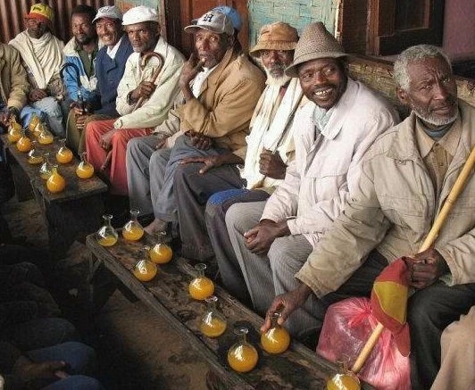
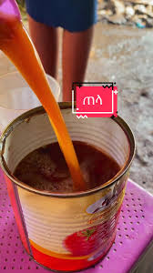
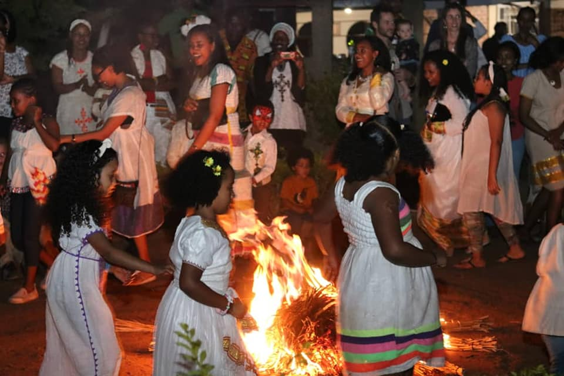
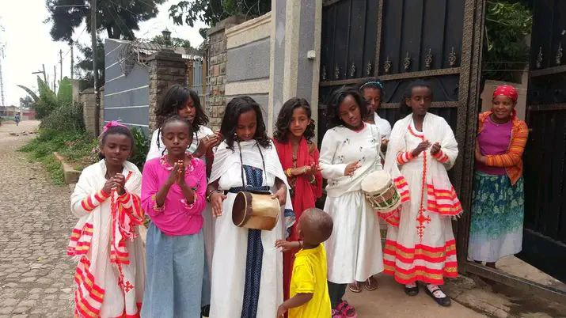

ባህላዊ ምግቦች እና መጠጦች

ዶሮ ወጥ

ጠጅ

አዲስ አመት በሃገራችህን በኢትዮጵያ በድምቀት ከሚከበሩት በዐላት አዲስ ዓመት(እንቁጣጣሽ)ተጠቃሽ ነው። በኢትዮጵያ ዘመን መለወጫ በመስከረም ወር የሚከበርበትን ምክንያት ሊቃውንቶች ሲያትቱ ብርሃን፣ ፀሐይ፣ ጨረቃ እና ክዋክብት የዓመት ዑደታቸውን በጳጉሜ ጨርሰው በመስከረም ወር ስለሚጀምሩ ነው ይላሉ፡፡ ያን ጊዜ ሌሊቱ ከቀኑ ጋር እኩል 12 ሰዓት ይሆናል፡፡ ዓመቱን ጠንቅቀው ሲቆጥሩትም 365 ቀናት ይሆናል፡፡ስለ አዲስ ዓመት ታሪካዊ አመጣጥ እና ስለበዐሉ አከባበር ከታች የሚታገኙ ይሆናል።



